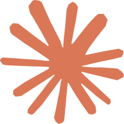
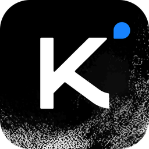
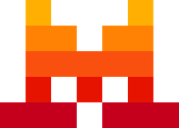

Modelos locais e da nuvem, tudo no mesmo lugar.
Aqui vai um exemplo: um conversor de temperatura que você mexe na hora.
<input type="range" id="c"> … <script> f.textContent = c.value * 9/5 + 32 </script>
E um trecho de código normal:
def c_para_f(c): return c * 9 / 5 + 32
A IA pode errar. Confira informações importantes.
Recomendados



Todos os modelos
